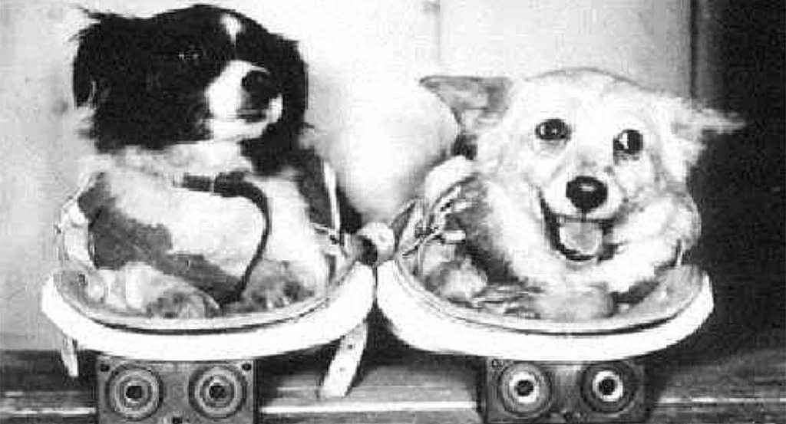
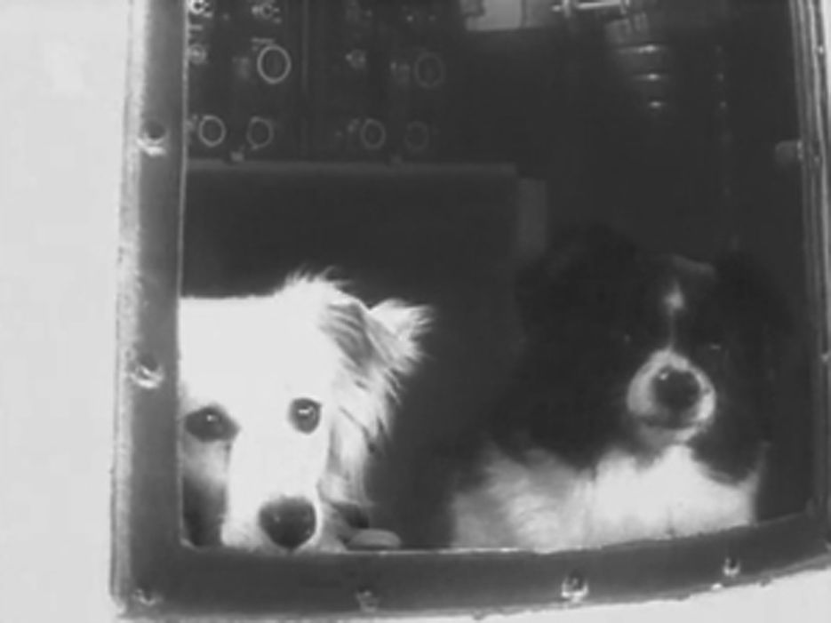
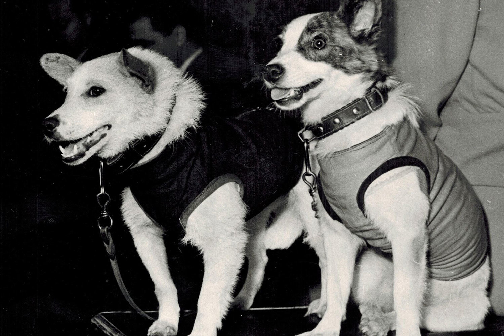
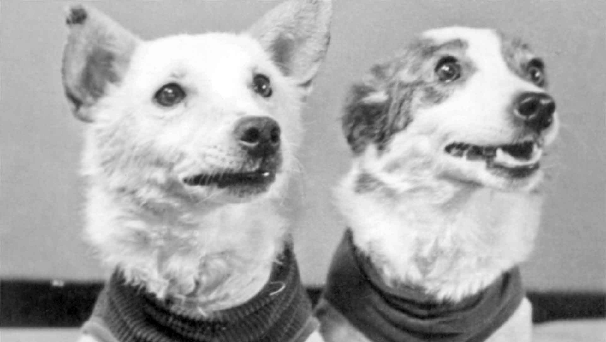

Дезик и Цыган

Дезик и Цыган — первые собаки, полетевшие в космос в рамках советской космической программы. 22 июля 1951 года Дезик и Цыган поднялись на ракете Р-1 к верхним слоям атмосферы на высоту 87 700 м и благополучно вернулись на Землю. Полёт продолжался 15 минут. Целью эксперимента было исследование возможности полёта высокоорганизованных животных на баллистических ракетах, а также изучение сложных физических явлений в околоземном пространстве. Дезик вновь поднялся в стратосферу уже через неделю после первого полёта вместе с новой напарницей Лисой. Однако система спуска подвела, и кабина с собаками разбилась. Цыгана после трагедии первого выжившего космонавта отстранили от программы. Его взял к себе председатель лётной госкомиссии академик Анатолий Благонравов, у которого Цыган прожил более десяти лет.

Белка и Стрелка

Белка и Стрелка — собаки-космонавты, совершившие космический полёт на советском корабле «Спутник-5» 19 августа 1960 года. Это был первый в истории случай, когда животные совершили орбитальный полёт и успешно вернулись на Землю. Основная цель полёта — исследование влияния на организм животных факторов космического полёта: перегрузки, длительной невесомости, перехода от перегрузок к невесомости и обратно. Полёт продолжался более 25 часов. За это время корабль совершил 17 полных витков вокруг Земли. Возвращение на Землю: на высоте около 7 км контейнер с собаками автоматически отделился от спускаемого аппарата и мягко приземлился на парашюте. Белка и Стрелка стали первыми животными, которые совершили орбитальный космический полёт и успешно вернулись на Землю. Белка и Стрелка открыли путь человеку в космос — менее чем через один год после их успешного возвращения на Землю, 12 апреля 1961 года, Юрий Гагарин в кабине корабля «Восток-1» произнёс своё легендарное «Поехали!».
